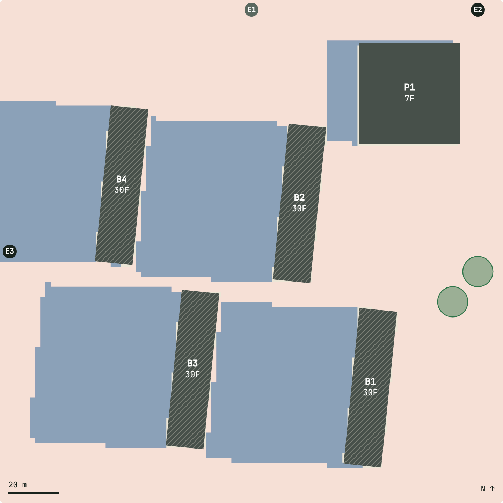
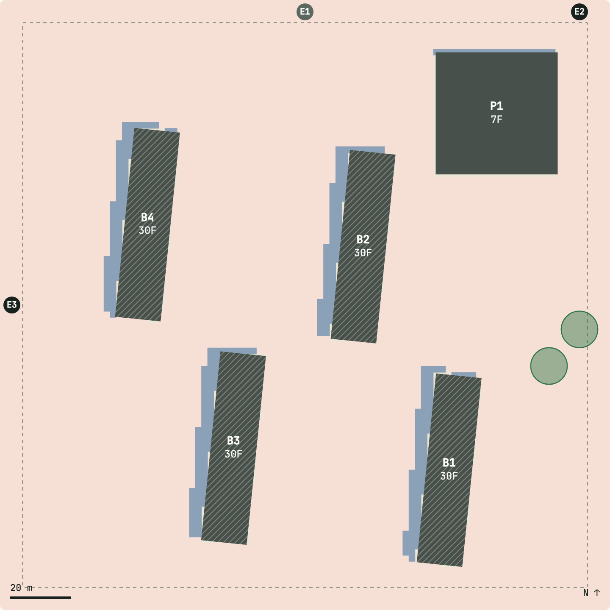
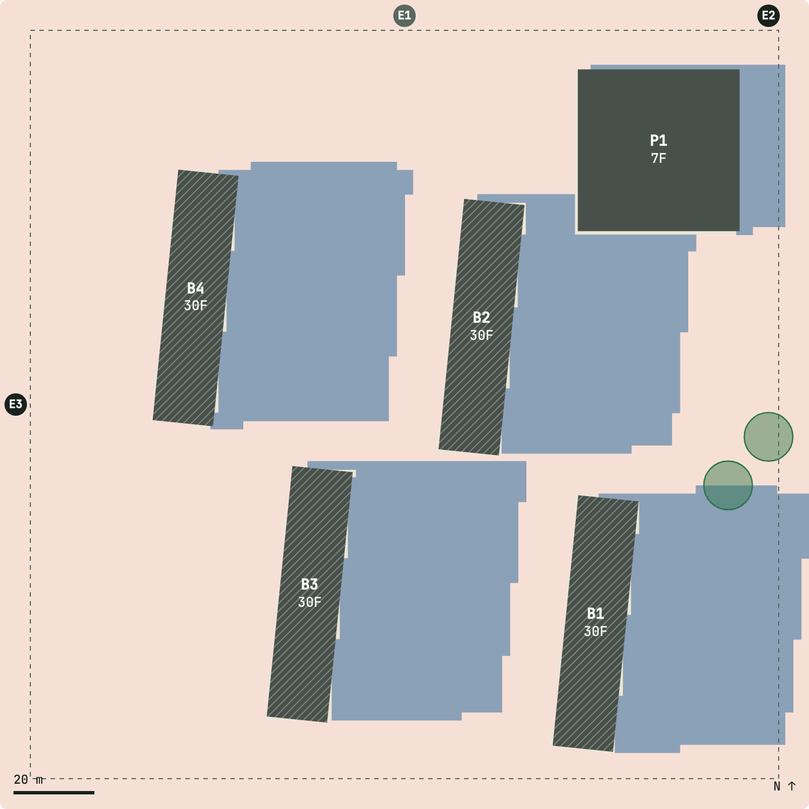
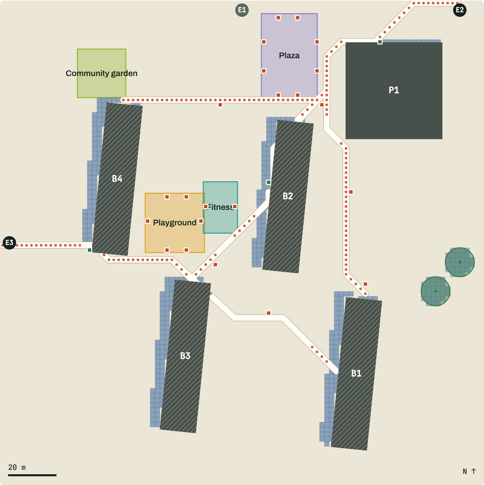
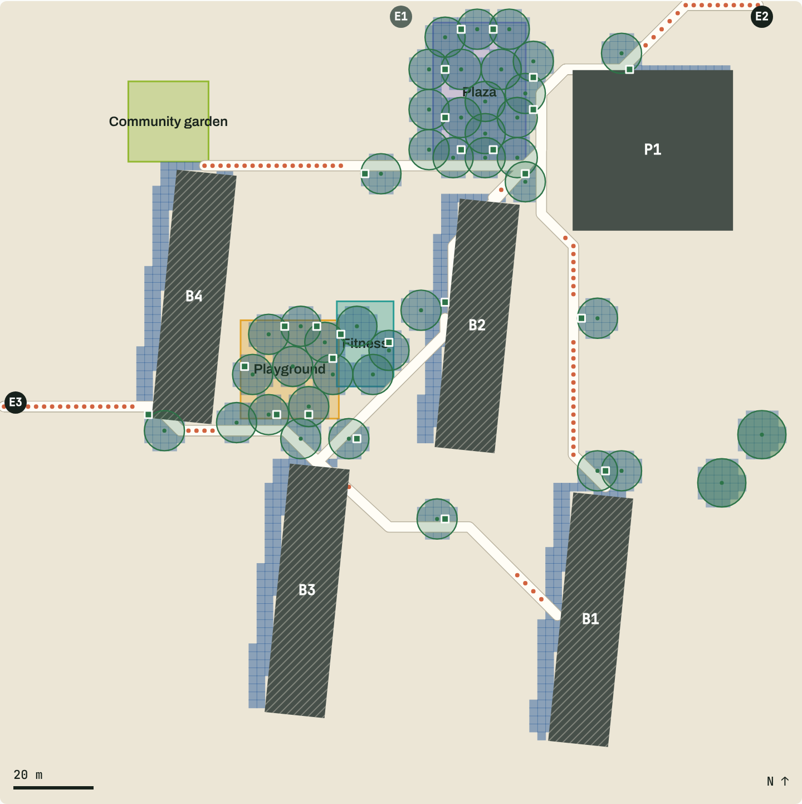

Outdoor thermal comfort is checked last: architects fix the blocks, and landscape is left to fix the heat.
In Singapore’s hottest hours the sun is almost overhead (86.6° at 13:00), so buildings shade only ~4% of the outdoor space. Trees do the midday work, but they get planted into whatever space is left.

11:0039%

13:004%

15:0032%
Outdoor space shaded by buildings (blue), equinox. At 13:00 the blocks cast almost nothing.
2 · Impact
Shade becomes a design input from day one.
3.7×outdoor shade of the AI layout vs a conventional slab layout
2.9×shade at 13:00 with the same 40 trees, placed by AI
41% → 99%seats in shade
110 → 26 mlongest unshaded walk
Architects own outdoor shade from day one: every layout option is scored on hot-hour shade before one is chosen.
One shared shade model for both disciplines. Design in two decisions: AI proposes and scores, designers choose.
Equinox, 11:00–15:00. Tree figures are the best of three AI planting schemes: shade and seats from scheme C, walk from scheme A.
Impact · 13:00, same blocks
Forty trees, placed where people walk and sit.

Buildings and two retained trees only

With 40 trees placed by the optimiser (scheme C)
Shaded ground at 13:001,584 → 4,564 m²
Seats in shade41% → 99%
Longest unshaded walk110 → 36 m
Scheme A, which lines the most exposed walks instead, brings the longest unshaded walk down to 26 m.
3 · Workflow
From brief to planting in two decisions.
1Planning briefArchitect
26 AI massing optionsAI
3Architect picks and edits, with live shadeDecision 1